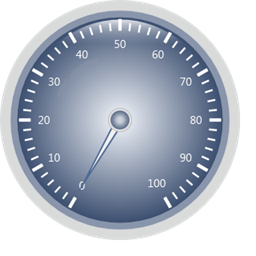

Refer to the following code to export the gauge in server side.
Step 1:
Controller:
Add the below code in your controller.
By setting the GaugeExport property to ServerSide and calling the GenerateGaugeImage() function, you can export the gauge in server side . Here you are setting the ImageFormat as Bmp and filename as “Gauge”.
|
public ActionResult Index() { CircularGaugeModel model = new CircularGaugeModel(); model.Radius = 160; model.GaugeSkins = GaugeSkins.VS2010; model.FrameType = GaugeFrameType.FullCircle;
model.GaugeExport = GaugeExport.ServerSide;
CircularScale c_Scale = new CircularScale(); c_Scale.PointerCapRadius = 8; c_Scale.BackgroundBrush = Brushes.Gray;
GaugeLabelTick c_LabelTick = new GaugeLabelTick(); c_LabelTick.FontSize = 15;
TickMark _minor = new TickMark(); _minor.TickStyle = TickStyle.MinorTick; _minor.TickWidth = 1; _minor.TickHeight = 9; _minor.TickPlacement = ScalePlacement.Outside; _minor.BackgroundBrush = Brushes.White;
TickMark _major = new TickMark(); _major.TickStyle = TickStyle.MajorTick; _major.TickWidth = 3; _major.TickHeight = 14; _major.TickPlacement = ScalePlacement.Outside;
CircularPointer c_Pointer = new CircularPointer(); c_Pointer.PointerLength = 100; c_Pointer.PointerWidth = 10; c_Pointer.BorderWidth = 2; c_Pointer.PointerPlacement = ScalePlacement.Inside; c_Pointer.MarkerStyle = MarkerStyle.Trapezoid; c_Pointer.Value = 0;
c_Scale.Ticks.Add(_minor); c_Scale.Ticks.Add(_major); c_Scale.Pointers.Add(c_Pointer); c_Scale.Labels.Add(c_LabelTick);
model.Scales.Add(c_Scale);
//Sets for server side export. model.GaugeExport = GaugeExport.ServerSide; //Function to generate the gauge in Server or client side in Gif format. model.GenerateGaugeImage(model, "Gauge", ImageFormat.Gif);
ViewData["GaugeModel"] = model;
return View(); } |
Step 2:
View:
Add the below code in view page.
|
View[ASPX] <%--Rendering the linear gauge--%>
<%=Html.Syncfusion().CircularGauge("Gauge", (CircularGaugeModel)ViewData["GaugeModel"])%> |
|
View[cshtml] @*--Rendering the linear gauge--*@
@Html.Syncfusion().CircularGauge("Gauge",(CircularGaugeModel)ViewData["GaugeModel"])
|
Step 3:
Run the code. You will get the below output. Then check the server map path location to get the exported Gauge.

Figure 83: Exporting